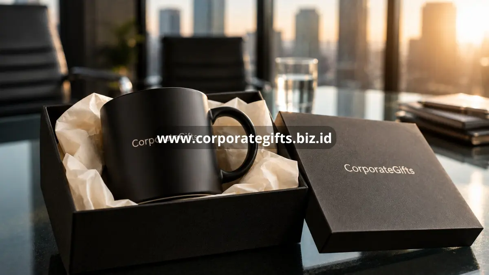

Poin Penting:
- Custom branding mengubah hadiah generik menjadi media pengenalan merek yang berkelanjutan.
- Elemen branding yang konsisten meningkatkan kepercayaan penerima terhadap kualitas perusahaan.
- Branding berlebihan justru dapat mengurangi kesan elegan sebuah hadiah.
- Loyalitas klien dan karyawan meningkat ketika branding terasa personal dan relevan.
- CorporateGifts menyediakan layanan custom branding untuk berbagai kategori hadiah corporate.
Custom branding pada hadiah corporate adalah proses menghadirkan identitas visual perusahaan, mulai dari logo, warna korporat, hingga tagline, pada produk yang diberikan kepada klien, mitra, atau karyawan. Perusahaan menerapkan custom branding agar setiap hadiah tidak hanya berfungsi sebagai barang, tetapi juga sebagai media pengenalan merek yang terus terlihat setiap kali digunakan. Riset GiftAFeeling (2025) mencatat bahwa 65 persen marketer menyatakan hadiah corporate meningkatkan loyalitas merek, dan custom branding menjadi salah satu faktor utama yang memperkuat dampak tersebut.
Bagaimana Custom Branding Memengaruhi Brand Recall Perusahaan?
Ketika sebuah produk digunakan berulang kali dalam aktivitas sehari-hari, logo dan warna merek yang tertera padanya turut terekspos secara berulang pula. Paparan berulang inilah yang secara bertahap membentuk brand recall, yaitu kemampuan seseorang mengingat sebuah merek tanpa perlu diingatkan secara langsung. Custom branding yang diterapkan secara konsisten, baik dari sisi warna, tipografi, maupun posisi logo, membuat proses pengenalan ini berlangsung lebih cepat dan lebih kuat dibanding hadiah tanpa identitas merek yang jelas.
Elemen Branding yang Perlu Diperhatikan pada Hadiah Corporate
Konsistensi logo menjadi elemen paling mendasar, karena logo yang buram atau proporsinya tidak sesuai standar dapat menurunkan kesan profesional sebuah hadiah. Warna korporat juga penting untuk dijaga kesesuaiannya, sebab warna yang konsisten dengan identitas visual perusahaan memperkuat asosiasi penerima terhadap merek. Kualitas cetak atau teknik aplikasi logo, baik melalui bordir, sablon, maupun ukiran, turut memengaruhi daya tahan branding pada produk. Terakhir, kemasan yang dirancang selaras dengan identitas merek memberikan kesan pertama yang kuat sebelum penerima bahkan melihat isi hadiah tersebut.
Dampak Custom Branding terhadap Loyalitas Klien dan Karyawan
Bagi klien, hadiah dengan branding yang rapi dan konsisten mencerminkan keseriusan perusahaan dalam menjaga hubungan bisnis, yang pada akhirnya turut memengaruhi tingkat kepercayaan dan loyalitas jangka panjang. Bagi karyawan, hadiah bermerek perusahaan tempat mereka bekerja dapat menumbuhkan rasa memiliki dan kebanggaan terhadap identitas perusahaan tersebut. Efek psikologis ini menjadikan custom branding bukan sekadar elemen visual, melainkan bagian dari strategi membangun keterikatan emosional dengan penerima hadiah.
Apakah Custom Branding Selalu Meningkatkan Nilai Hadiah Corporate?
Meski branding penting, penerapannya tetap perlu memperhatikan keseimbangan desain. Logo yang terlalu besar atau ditempatkan berlebihan pada seluruh permukaan produk justru dapat membuat hadiah terkesan seperti media promosi murahan, bukan hadiah bernilai. Pendekatan branding yang lebih halus, misalnya logo berukuran proporsional di posisi strategis, cenderung menghasilkan kesan lebih elegan sekaligus tetap efektif membangun pengenalan merek.

Peran Konsistensi Branding dalam Membangun Kepercayaan Jangka Panjang
Kepercayaan terhadap sebuah merek umumnya terbentuk melalui pengalaman yang berulang dan konsisten, bukan dari satu interaksi tunggal. Ketika elemen branding pada hadiah corporate selaras dengan identitas visual yang digunakan di website, kartu nama, maupun materi pemasaran lain, penerima secara tidak sadar membangun persepsi bahwa perusahaan tersebut rapi, profesional, dan dapat diandalkan.
Sebaliknya, ketidakkonsistenan warna atau gaya logo antar media dapat menimbulkan keraguan kecil terhadap kredibilitas perusahaan, meskipun produk hadiahnya sendiri berkualitas baik. Oleh karena itu, menjaga konsistensi branding pada setiap hadiah corporate yang dibagikan menjadi bagian penting dari strategi membangun kepercayaan yang berkelanjutan, baik di mata klien maupun karyawan internal.
Custom branding menjadi salah satu elemen paling menentukan dalam efektivitas hadiah corporate, karena mampu mengubah barang sederhana menjadi media pengenalan merek yang berkelanjutan. Agar hasil branding tetap elegan dan sesuai identitas perusahaan, CorporateGifts membantu menerjemahkan konsep merek Anda ke dalam produk hadiah corporate yang berkualitas. Hubungi CorporateGifts untuk mewujudkan custom branding hadiah corporate yang mencerminkan citra perusahaan Anda.
FAQ
1. Apa itu custom branding pada hadiah corporate?
Custom branding adalah proses menyematkan identitas visual perusahaan seperti logo, warna, dan pesan pada produk hadiah, agar berfungsi sebagai media pengenalan merek.
2. Mengapa custom branding penting untuk brand recall?
Penggunaan hadiah bermerek secara berulang akan menciptakan paparan konstan terhadap logo perusahaan, yang pada akhirnya memperkuat ingatan penerima terhadap merek tersebut.
3. Apakah logo yang besar lebih efektif untuk branding hadiah corporate?
Tidak selalu, logo yang terlalu besar atau mencolok justru bisa mengurangi kesan elegan dan membuat hadiah terkesan seperti barang promosi murah; branding yang proporsional dan halus seringkali lebih diminati.
4. Elemen apa saja yang harus diperhatikan dalam custom branding?
Konsistensi warna korporat, kualitas aplikasi logo (bordir, ukiran, atau sablon), dan desain kemasan yang profesional adalah elemen kunci untuk branding yang sukses.
5. Apakah custom branding juga berdampak pada karyawan internal?
Ya, menerima hadiah corporate dengan branding perusahaan dapat meningkatkan kebanggaan karyawan terhadap tempat kerja mereka dan memperkuat rasa memiliki (sense of belonging).
Butuh rekomendasi cepat untuk corporate gift?
Chat tim Pusat Souvenir & Merchandise Kantor untuk kurasi pilihan sesuai budget & kebutuhan brand Anda.